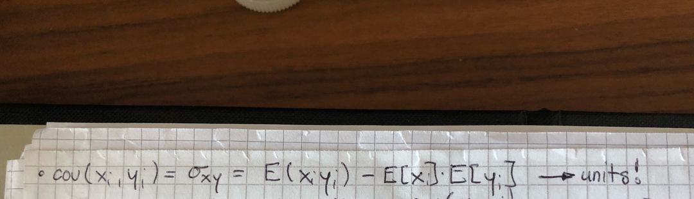

Chapter 8 Econometrics
8.1 Synonyme:
- Dependent variable // y-variable // regressand // Y-intercept // outcome variable // response variable // label // ground truth
- X-variable // variable of interest // explanatory variable // regressor // covariates // independent variable // predictor // attribute
- regression of y on x // regress y on x
- slope coefficient // beta
- Controlling for // conditional on // holding fixed // holding constant // “certeris paribus” // statistically account
- Classical linear regression model // CLRM
- Linear probability model // LPM
- Probit model // probit regressions
- Logit model // logit regressions
- (Population) data generating process // Population regression function // PRF // „true“ regression (—> very often unknown)
- Sample regression function // SRF // fitted model // estimated model
- Range // distribution // histogram
- Dummy variable // categorical variable
- Endogeneity // Omitted variable Bias // OVB // violation of assumption 2 (= the non-zero mean assumption)
- R squared // coefficient of determination
- RSS // SSR // residual sum of squares // sum of squared residuals
- Fitted value // predicted value // Y(hat)
- Validity // internal Validity // external Validity
- Randomized experiment // Random Assignment study // social experiment // randomized control trial // randomized trial
- Expected value // predicted value
- Heterogeneous treatment effects // interaction terms
- Fixed Effects // FE
- Difference-in-Differences // Diff-in-Diff // DiD
- Two stage least squares // 2SLS // Second Stage // IV-Regression
- NA // Censored Data // Latent Variable —> can be estimated with a Tobit Model or Heckman Two stage Model (where the dependent variable is censored // has NAs, for example wages of people who don’t work cannot be observed // are censored)
- Observation // Row in R // samples // records (in computer science)
- Column in R // field (in computer science)
- Variable // Column in R
- Finite // Definite
- Infinite // indefinite
- Relativ zu // im Verhältnis zu
- Seasonal ARIMA // SARIMA // ARIMA(p,d,q)(P,D,Q)
8.2 English Words Synonyme
- Among = across
- Fixed = not random —> an example would be the true parameters of the population would be fixed // not random, but you don’t know them —> you can only approximate the true parameters by taking a random sample and estimating it’s coefficient to approach the true / fixed coefficient with a random (but estimated) coefficient, which resulted from a sample that the researcher took.
- With respect to … = in Bezug auf… = Auf der (z.B. klanglichen) Ebene…
8.3 Allgemeines
- Numerator = Zähler
- Denominator = Nenner
- Ditto = ebenfalls
- A priori = When dealing with ommitted variable bias, you need to ask yourself the question: what are the most likely sources of important omitted variable bias in this regression? Answering such a question requires applying economic theory & expert knowledge, and should occur before you actually runy any regressions; because this step is done before analyzing the data, it is referred to as „a priori“ („before the fact“) reasoning.
- Non-Linearity in X examples: A regression is not linear in one regressor „x“, if - for example - the „x“ was logarithmic or is an interaction term.
- Non-linearity in „beta“ // parameters // coefficients: An example of a regression function being non-linear in the parameters // coefficients are: 1) logistic regressions, where the dependent variable is between 0 and 1 (you use an s-shape function that can match all x-values between -infinity to +infinity to a y-value between 0 and 1); or 2) negative exponential growth:

- Importantly, non-linearity in „beta“ cannot be estimated using OLS, but rather, with an extension of OLS called nonlinear least squareds.
- Independence assumption when dealing with probabilities & variances: Independence has implications on how you calculate in statistics. For example, it affects the calculation of joint probabilities or variances with 2 random variables:

8.4 Statistics Formulas
- Formula for covariance: 
- Formula for (population) variance:

8.5 Definitionen
- Beliefs: VL1, Yanazingawa, S.2
- Evidence: VL1, Yanazingawa, S.2
- Counterfactual: VL 1, Yanazingawa, S.5
- Validity // internal Validity // external Validity: VL 1, Yanazingawa, S.7, S.12
- Randomized experiment // Random Assignment study // social experiment // randomized control trial // randomized trial: VL1, Yanazingawa, S.7
- Control Group: it mimics the counterfactual: VL1, Yanazingawa, S.7
- Treatment Group: VL1, Yanazingawa, S.7
- Random Assignment (= part of randomization): VL1, Yanazingawa, S.7
- Random Sampling (= part of randomization): VL1, Yanazingawa, S.7
- Why is randomization important?: VL1, Yanazingawa, S.7-8
- Observational Study: VL1, Yanazingawa, S.10 (wichtig für MA, weil es genau in mein Kontext fällt!)
- Bivariate Regression: Vl2, Yanazingawa, S.2
- Population Regression Funtion // Sample Regression Function: VL2, Yanazingawa, S.3
- Dependent variable // y-variable // Regressand // Y-intercept: VL2, Y-intercept, S.3
- Independent variable // x-variable // Regressor // Covariate // Explanatory Variable(s): VL2, Y-intercept, S.3
- Slope Coefficient // Beta: VL2, Y-intercept, S.3
- Interpretation of Slope Coefficient Bivariate Regression: VL2, Yanazingawa, S.4
- Interpretation of Slope Coefficient Multivariate(!) Regression: VL2, Yanazingawa, S.10
- Interpretation of Intercept Bivariate Regression: VL2, Yanazingawa, S.4
- Interpretation of Intercept Multivariate(!) Regression: VL2, Yanazingawa, S.10
- Expected Value // Predicted Value: VL2, Yanazingawa, S.4
- Interpretation p-value (= it’s a bedingte(!!) W’keit): VL2, Yanazingawa, S.5
- What does it mean to have a small Standard-Error?: VL2, Yanazingawa, S.6
- Statistical Significance & its Implication: VL2, Yanazingawa, S.7
- Understanding “Holding Constant”: VL2, Yanazingawa, S.12
- Positive // Negative Bias Table: VL3, Yanazingawa, S.5
- Overstated // Understated Concept (Prof does not like the concept…): VL3, Yanazingawa, S.5
- Dummy Variable // Categorical Variable: VL4, Yanazingawa, S.1
- Dummy Variable Trap: VL4, Yanazingawa, S.3 & S.6
- Multicolinearity: VL4, Yanazingawa, S.3
- Range // Distribution // Histogram: Ü1, Yanazingawa
- Scatterplot: Ü1, Yanazingawa
- Linear probability Model // LPM: VL5, Yanazingawa, S.2
- Interpretation of Slope Coefficient in Linear Probability Model // Regression: VL4, Yanazingawa, S.2
- Interpretation of Intercept Linear Probability Model // Regression: VL4, Yanazingawa, S.2
- Advantages // Disadvantages of LPM: VL5, Yanazingawa, S.4
- Advantages // Disadvantages of Logit Model: VL5, Yanazingawa, S.5
- Probit Model // Probit Regressions: VL5, Yanazingawa, S.5
- Logit Model // Logit Regressions: VL5, Yanazingawa, S.13
- Implement a Probit Model with Code: Ü2, Yanazingawa, Question 6
- Heterogeneous Treatment Effects // Interaction Terms: VL6, Yanazingawa, S.1, S.4 (first bullet)
- Coefficient Interpretation of Continuous-Dummy Interaction: VL6, Yanazingawa, S.4-7
- Coefficient Interpretation of Dummy-Dummy Interaction: Vl6, Yanazingawa, S.8
- Merge different Datasets together: Ü3, Yanazingawa, 5) c)
- Bad Controls: Ü3, Yanazingawa, 5) d), siehe Korrektur auf meinem gedruckten Problemset!
- Fixed Effects // FE: VL7, Yanazingawa, S.3 & Zusammenfassung (ZF) auf letzter Seite des Handouts
- Difference-in-Differences // Diff-in-Diff // DiD: VL8, Yanazingawa, S.1
- Parallel Trend Assumption: VL8, Yanazingawa, S.2
- Interaction Terms between two FEs: Ü4, Yanazingawa, Aufgabe 3, Part I = a „country x time FE“ interaction controls for country-specific time-trends. However, to use it, you need 2 observations for each country and year (if we assume the time FE to be years…)
- Make Dummy Variables while having multiple Conditions: for example, the city needs to be between 25 km and 75 km away from the border = Ü4, Yanazingawa, Aufgabe 1, Part II
- Clustering the Standard Errors: Ü4, Aufgabe 1, Part II
- Endogeneous Regressor: VL9, Yanazingawa, S.1
- Validity of an Instrument: VL9, Yanazingawa, S.1
- Exclusion Restriction: VL9, Yanazingawa, S.2
- Two Stage Least Squares // 2SLS // Second Stage: VL9, Yanazingawa, S.6 & S.7
- First Stage: VL9, Yanazingawa, S.6
- Reduced Form: VL9, Yanazingawa, S.6
- IV-Regression in R: Ü5, Yanazingawa, Aufgabe 1 a)
- Calculation of Mean while ignoring NAs: Ü5, Aufgabe 2 a)
- Standardize a Variable: Ü5, Audgabe 2 a)
- Interpretation with standardized Variables: Ü5, Audgabe 3
- ATE, ATT, ATUT: Ü2, Biroli, Aufgabe 2
- Selection Problem: Ü2, Biroli, Aufgabe 3
- Histrogram: zeigt die an, wie häufig ein Wert auftaucht.
- Scatter-Plot: Plot, welcher die Korrelation zwischen zwei Variablen in einem Datensatz aufzeigen.
- Dichtefunktion: W’keit, einen Wert zwischen “Wart a” und “Wert b” zu erhalten (im Kontext von Zufallsvariablen) = verwendet man bei stetigen Massen, wie Gewicht oder Distanz etc…
- Cross-Sectional Data: Observation of an economic agent (for example individuals, firms, households etc.) collected at one point in time; you can have agent FEs, but not time FEs!
- Panel Data: Multiple observations on agents over time (—> you have a time index, as well as an index for individuals!) —> here you can add time FEs and also agent FEs
- Confounders // Mediator Variables: These are the unobservable factors in your regression // in the error term that correlate with your x-variable of interest, as well as your y-vaiable, thus inducing bias when you estimate your model

- Note: The term „Mediator“ is used for independent variables that cause a change in the y-variable.
- Note 2: The term „Moderator“ are used for interaction terms, e.g. that the effect of an x-variable is modified and depends on the second variable.
- Bivariate Regression: a regression with only one regressor // x-variable
- Multivariate Regression: a regression with multiple x-variables.
- 3 Common Reasons for Endogeneity:
- Simultaneous Causality: x causes a change in y but y also causes a change in x
- Correlated unobservable Variable: leads to OVB in your coefficient of interest
- Measurement Error in x: you will have attenuation bias, e.g. bias towards zero
- Note: There is also the possibility that you have measurement error in y. In this case, we do not have a bias in the coefficient of interest! —> however, the standard error of the coefficient gets bigger if you have this kind of measurement error!
- Degrees of Freedom (d.o.f.): If we have „N“ observations and „K“ regressors in a regression, then we have: v = N - K „degrees of freedom“
- R-Squared: measures the goodness of fit, e.g. how much of the variance of y can be explained by our model // it is the squared correlation between the population regression function and our predicted SRF.
- Problem with the measure R-Squared: if you rescale the y-axis in the regression, for example with a log-function, it will lead to a reduction of the variability in Y and increase the R squared without improving the regression.
- Overfitting the Data: This term is another problem that comes along with the measure „R squared“: the thing is, that you always increase the R squared when you add an additional regressors into your regression. With this characterstic, you could think of people adding regressors with almost no correlation to Y but still increasing the R squared without augmenting the precision of the estimated model!
- Unbalanced Groups (Kontext: RCTs pr Dummies): If the treatment and control group are - on average - different to begin with, then the groups are unbalanced! —> your estimated treatment effect will likely to be biased
- BLUE = best (= efficient), linear, unbiased estimator
- Consistency: if you have an infinite number of observations for your sample, then the estimated coefficient will converge towards the true coefficient of the population with a smaller variance for the estimated coefficient distribution —> we then say that the estimated coefficient is „consistent“ —> Note: the statistical theorem that forms the basis for consistency is called the Law of Large Numbers.
- Attenuation Bias: This is the Bias, when we have measurement error, meaning that the coefficient of interest „beta“ will be biased towards zero —> e.g. if beta > 0, then beta has a negative bias (it is smaller than what it should be) or if beta < 0, then beta has a positive bias (it is bigger than it should be) —> note: If we have a measurement error in one particular „x“ of a multivariate regression, we will have a higher bias (in absolute value), which is worse than in a simple linear regression case —> the bias towards zero gets bigger! (See the formula on page 90 of „sources of bias, Crawford)
- Partitioned Regression: you do a bivariate regression of the residuals of 1) a regression of x(i) on all other x(-k)] on 2) the residuals of a regression of y on all other x(-k)]
- Replication Samples // Monte Carlo Simulation: You (randomly!) draw different samples of size „N“ from the same population many times, for example say you draw them „R“ times. Then, you plot the distribution of the average of each sample —> you will see that, by drawing larger sizes of samples „N“ holding fixed the number of draws „R“ —> the average of the distributed average samples will converge to the true average of the population!
- Serial Correlation: correlation of a variable with a lagged version of itself —> you need this because of the assumption 4 of the CLRM: residuals should not have a serial correlation with one another
- Selection Bias: when an individual selects himself into the treatment- / control-group, because he has an advantage of doing so.
- Compliers (in an Instrumental variable setting): You usually have compliers appearing, when an instrument is not assigning people randomly between treatment- and cotrol-groups. In this case, the compliers would be the people who choose to get treated (D=1), when they actually get assigned to treatment (Z=1) and decide not to get treated (D=0), when the instrument is not activated (Z=0).
- Never Takers (in an Instrumental variable setting): People who choose to never get treated, independently whether the instrument is switched on or off! —> D = 0 (always!), if Z = 1 bzw. Z = 0
- Always Takers (in an Instrumental variable setting): People who choose to always get treated, independently whether the instrument is switched on or off! —> D = 1 (always!), if Z = 1 bzw. Z = 0
- Synthetic Control: This method creates an appropriately weighted average of control units which best approximates the evolution of the outcome in the treated unit before treatment. —> the key concept of using the synthetic control is that we construct an artificial control group to get a reasonable estimate for our missing counterfactual (= our treatment, which would not have been treated)
- RDD with a
sharpDesign: This is an RDD where the probability of treatment at the cutoff point changes from 0 to 1. - RDD with a
fuzzyDesign: This is an RDD where the probability of getting treated changes (also) discontinuously, but less than 100%. - Saturated Model: This is a model with a full set of dummies, e.g. in such a model, there is no constant!
Type I-Error in statistical Testing: A type I error happens, when we wrongly conclude that the null hypothesis H(0) is false, when it‘s acutally true (Eselsbrücke —> Jemand sagt die Wahrheit, aber alle meinen, er lügt!)- The significance-level „alpha“ is representing the type I error.
- Ideally, we want to minimizes both errors: type I and type II
Type II-Error in statistical Testing: A Type II error happens, when we wrongly conclude that the null hypothesis H(0) is true, when it is actually false (Eselsbrücke —> Jemand erzählt eine Lüge, und alle glauben ihm diese!)- Often, the type II error is referred to as „beta“: the probability of concluding that H(0) is true when it‘s actually false. Hence, (
1-beta) is the probability of concluding that H(0) is false, when it is actually // truly false (probabilities sum up to 1, that‘s why we can do this!). This(1- beta)probability is also called the statistical power! - Ideally, we want to minimizes both errors: type I and type II
- Often, the type II error is referred to as „beta“: the probability of concluding that H(0) is true when it‘s actually false. Hence, (
- Statistical Power: read the first sub-point of type error II just above!
- Grundsätzlich gilt: a small sample size gives us little power to reject the null hypothesis (wahrscheinlich, because you have large standard errors // variance(beta-coefficient) is high), whereas a large sample size gives us more statistical power. —> Usually, we want the power to be larger than 50%! —> a power between 80 to 90%, e.g. the probability to reject H(0) when it is TRULY false. By the reverse probability, this would also imply that - with a statistical power of 80-90% - we would have a 10 to 20% probability to accept the H(0), even though it is false!
- Merk-Regel: A high statistical power is what you want, otherwise you would not conduct a study!
- Supplementary Analysis: supplementary analysis seeks to shed light on the credibility of the primary analysis (= this is for example a DiD method, or IV, or RDD) —> an example of a supplementary analysis is placebo testing
- Objective Function: this is a general function that individuals seek to maximize —> example: a lifetime utility function takes on many values. The individuals seek to choose the maximum value (sometimes the minimum value, if it’s a cost-funtion) out of all those values of this „objective function“.
- Resampling: If you have a classification problem, where you have a y-variable with 9000 cases of „obese“ and 1000 cases of „normal weight“, then you have a problem that „normal weight“ people are under-represented in your sample. Thus, you have imbalanced data and you need to use resampling techniques with - for example - the „imblearn“ library to have a dataset that is equally distributed, e.g. 1000 cases of „normal weight“ and 1000 cases of „obese“.
- A staggered Treatment (first time I heard of it was in the context of DiD): This means that - for example - an individual can choose to get treated, but once it gets treated, he cannot get out of the treatment (example: COVID vaccines are like that).
8.6 Different Tests // Vorgehen bei den Tests
- Check if random Assignment // Randomization into Treatment- & Control-Group was successful: VL1, Yanazingawa, S.
- Placebo Testing: this test involves demonstrating that your effect does not exist when it really „should not“ exist —> you pick a period where no treatment occured and try to see if your treatment group really did not react to „no treatment“ in this particular period!
8.7 Diverse Berechnungen
- Review of Hypothesis-Testing // Testing differences in Means: Vl1, Yanazingawa, S.9 & S.11
- Hypothesis testing “no effect” (= H0) VS. “there is an effect”: VL2, Yanazingawa, S.5
- Bias = short Regression Coeff. - long Regression Coeff. =
beta(2)*gamma [= corr(Y, omitted) * corr(X, omitted)]
8.8 Accept // Reject Null-Hypothesis
- t-statistic:
- beidseitiger Test: if t-stat (im Betrag) > crit.-value –> reject the null
- Note: we use Z(1- [alpha/2]) as the critical value, since we have a two-sided test.
- rechtsseitiger Test: if t-stat > crit.-value –> reject the null
- Note: use Z(1-alpha) as the crit value, since we have a one-sided test.
- linksseitiger Test: if t-stat < critical value –> reject the null
- Note: use Z(1-alpha) as the crit value, since we have a one-sided test.
- beidseitiger Test: if t-stat (im Betrag) > crit.-value –> reject the null
- Important general fact about hypothesis: Just because you cannot reject a null-hypothesis does not mean that the null-hypothesis is true. It just means that you don’t have enough empirical evidence to prove that the alternative-hypothesis is true.
- p-value:
- Definition: Gives the probability that we would get our „sample-mean“ (= the mean that you just calculated from the data // sample you have drawn) IF the Null-hypothesis was true!
- Interpretation: This implies - when we have a very small p-value - that - GIVEN our sample - there is very small probability that we would get this sample mean if the nullhypothesis was true. —> this is a good result for a researcher, since he / she seeks to reject the null-hypothesis!
- beidseitiger Test: if p-value < alpha –> reject the null
- rechtsseitiger Test:
- linksseitiger Test:
- Definition: Gives the probability that we would get our „sample-mean“ (= the mean that you just calculated from the data // sample you have drawn) IF the Null-hypothesis was true!
- Types of Errors in statistical Testing:

Was ist p-hacking?
In der Statistik gibt es den p-Wert ein: Man nimmt an die Hypothese sei wahr und berechnet dann die Wahrscheinlichkeit, dass die beobachtete Statistik mindestens so extrem ausfallen würde (für die Gegner von Wischi-Waschi hier die Wikipedia-Definition). Falls diese Wahrscheinlichkeit unter 5% liegt, dann sei das Resultat “statistisch signifikant” (yay!) und die Nullhypothese kann verworfen werden, was oftmals die Absicht ist.
Das Problem ist nur: Hypothesen gibt es viele und z.T. auch recht ähnliche. Wenn man genug Hypothesen aufstellt - vor allem, nachdem man sich die Daten angeschaut hat - dann ist es durchaus möglich, dass man ein statistisch signifikantes Resultat erhält, unabhängig davon, ob das Resultat tatsächlich auch stimmt. Das nennt man p-Hacking. Es kommt häufig in der Forschung vor, aber es kommt sicher auch in der SBB vor (dennoch hier eine +1 für Hypothesen-basiertes arbeiten!). Wie einfach man in die “falsche Signifikanz Falle” tappen kann, wird hübsch in dieser Gallerie falscher Korrelationen illustriert.
8.9 Formulierungen
- For “correlation”:
- “is correlated with”.
- “is associated with”.
- For “causation”:
- “lead to…”
- “has an effect on..”
- In Regressions:
- “hold constant”
- “certeris paribus”
- “holding fixed”
- “controlling for”
- “conditional on”
- “statistically account for”
- “Y is a function of X”:
- y(x)
- y = f(x)
- y depends on x
- y as a function of x
8.10 Coefficient Interpretation
- Lin-Lin:
- Lin-Log: a 1% increase in X will increase // decrase Y by (
beta/100) units! - Log-Lin: a unit change in X will increase // decrease Y by
beta *100percent! - Log-Log: a 1% increase in X will increase // decrease Y by beta %
- Log-Dummy (dh logarithmierter dummy?): Here you have to be very careful (Fallunterscheidung!):
- If your coefficient on the dummy is very small, then you can do the normal „Lin-Log“ interpretation, it will be approximately correct.
- However, if your coefficient on the dummy is big, then you need to transform your coefficient before you do the interpretation! The formula would be:
exp^(estimated beta) -1—> if you multiply this result by 100 then you get the correct %-units and you can procede to do the normal „Lin-Log“ interpretation!
- Coefficient Interpretation (multivariate Case): "Beta 1 tells us the average change (, e.g. increase // decrease) in Y associated with a one-unit-change in X(1), holding constant X(2) and all other variables!
- Coefficient Interpretation (y-variable in Prozent): "A unitary increase in X is associated with a change in Y of XYZ Percentage Points(!!!)
- Coefficient Interpretation (x-variable in percent): "An 1 percentage point(!!) increase (= unitary increase when x-var. is in percent) is associated with a XY unitary change in y.
- Coefficient Interpretation of a Linear Probability Model: "Being 1 year older (= x-variable is age [in years]) increases the probability of getting married. Pay attention: the increase is in percentage points (-> y-variable is a dummy!!! [–> dh the slope coefficient is the change in the probability in a LPM! –> dh you need to multiply the number of the coefficient by 100 to get the result in the change in probability (in percentage points of course…)!])
- Coefficient Interpretation of a Probit Model: you cannot interpret the magnitude (= Grösse des coeff.) directly, you need to transform it first (with a complicated formula for the s-shape function)! However, the sign AND the statistical significance can be directly interpreted from the coefficient of a probit model!
- Coefficient Interpretation of a
dummy*continuousInteraction: for example the gender-wage gap –> returns to education can vary depending if you are a man or a female. Hence, the coefficient represents the difference in slopes (for education, e.g. the continuous variable) for males and females. - Coefficient Interpretation of a
Dummy-DummyInteraction Term (hier:female * black // gender * enthnicity): when you have 2 dummies, you have - in total - 4 different “states of the world” // 4 different possibilities. Hence, you have 2 different possibilities to do the coefficient interpretation, which is either the differences between black and white males // females, or the differences between white male and females // black male and females. –> these two interpretations are equivalent, but often one is more interesting than the other! –> very important: thedummy*dummy-coefficient = Diff-in-Diff estimator!! - Coefficient Interpretation while “holding constant” FEs: Within(!!) districts, full RTML reception is associated with a XY unitary change in genocide cases, compared to zero reception. –> Alternative: “holding constant all factors that vary across districts (= FEs)”
- Coefficient Interpretation with standardized Measurements in X and in Y: If corruption increases by one standard deviation, then child mortality will rise by 0.6259 standard deviations or 62.59% of a standard deviation of child mortality.
8.11 Nice to Know
- Why do we need statistics in econometrics? -> Because it is the statistical theory that allows you to make statistical inference from your sample to your underlying population!
- Random VS. Non-Randomness of Mean & Variance // Features: Features of the population are fixed, dh non-random (but unknown!), whereas features of the sample are random (but known!) —> e.g. if you draw another sample from the population, it is very likely that you get different numbers than in your other sample!
- If you want to see, if an estimator is economically meaningful: This is done by looking at the magnitude of the coefficient.
- How to calculate the magnitude of a coefficient // whether to know if the effect is big or not? —> formula:
magnitude = coeff. of interest / average estimated Y—> make a summary-statistic of your regression to find out this average estimated Y!
- How to calculate the magnitude of a coefficient // whether to know if the effect is big or not? —> formula:
- Law of large numbers: The sample mean converges to the population mean as the sample size „N“ gets large.
- Bootstrapping: when you pick a random sample out of a population, you probably will get a different number than with another sample (of the exact same size & exact same population). This exact method can be done with „Bootstrapping“ —> the goal is to see, if your analysis gets completely different (—> this would be bad…) or stays approximately the same (this is the outcome you want…).
- The 5 assumptions in a regression model that must be true (otherwise we get a biased estimator):
- The PRF is assumed to take a linear form (—> that‘s why you need to sometimes take the logarithm of a non-linear relationship!)
- Key assumption for causal interpretation of the coefficient: Mean zero Error —> the error term has an expected value of zero —> E(error/X) = 0 implies that cov(error, X) = 0 —> in other words: that there is no correlation between the coefficient of interest and „everthing else“ // all unobservables in a regression
- Homoskedasticity —> dh the variance of the residuals should always stay the same —> how to see if A3 is satisfied? —> look at a scatterplot of the residuals (on y-axis) plotted against a regressor: you want to see „picasso on drugs“, e.g. a variation in the residuals on the y-axis that stays constant with increasing „x“

- A4: No correlation between the lagged residuals —> how to see if A4 is satisfied? —> use the Autocorrelation-function in R to see if the residuals are correlated with each other (this is what you don‘t want!)-

- A5: Normality —> residuals should be normally distributed —> how to see if A5 is satisfied? —> plot the density function of the residuals, it should look like a normal-distribution! If not, then the assumption is violated!
- What happens, if all the above 5 assumptions are satisfied?
- The coefficient of interest will be unbiased (= Unbiasedness)
- Efficiency —> e.g. the variance of the estimated coefficient is the smallest (compared to non-OLS estimation), which is a good thing, because we will always have an estimated coefficient that will be the closest guess to the true beta-coefficient!
- Our estimated coefficient will be normally distributed (good for hypothesis testing etc…)
- What happens if A1-A5 are violated and how to fix it?
- Assumption 1 (= Linearity): This assumption is most certainly violated (the true PRF is very rarely linear) —> fixing it is not such a big deal —> either you can add non-linearity in x:
- log-transform your regressor
- Make a polynomial for x (often used in RDD)
- OR add interaction terms
- or add non-linearity in beta:
- Using nonlinear Least Squares (= these are non-linear models —> look it up in a fat textbook!)
- Assumption 2 (= non-zero mean): This will lead to OVB // your regressor is endogeneous! —> to fix it, you need to control for the unobservable factor OR to use some fancy methods like Fixed effects, IV, RDD or RCT that allows you to control for the unobserved factor!
- Assumption 3 (homoskedasticity): if your variance of the error term is heteroskedastic, your assumption 3 is violated —> use a statistical test to see if your variance is homo- or heteroskedastic! —> it‘s not a big deal if this assumption 3 is violated, because the estimated coefficient of interest will still be unbiased! But the standard errors will be wrong though —> to fix it, you can tell your statistical software to account for heteroscedasticity! —> when you account for heteroscedasticity, you will have to use so called „robust standard errors“!

- Assumption 4 (correlation between error terms is zero): if this assumption gets violated, it‘s also not a big deal, because (like A3) the estimated coefficient of interest will also still be unbiased! But the standard errors will again be wrong though! To fix this, you can tell your statistical software to cluster the standard errors.
- Assumption 5 (normally distributed errors): very uikely that this assumption is violated, because we have the very powerful „Central Limit theorem“ that backs it up! —> prof crawford did not tell us how to fix it, because it is very rarely violated!
- Assumption 1 (= Linearity): This assumption is most certainly violated (the true PRF is very rarely linear) —> fixing it is not such a big deal —> either you can add non-linearity in x:
- Under which of the above assumptions is an estimated coefficient BLUE? —> under the Assumptions 1-4 the estimated beta-coefficient will be BLUE!
- Why do we take correlations instead of covariances? —> because correlations have no units (only a number between -1 and +1), while covariances can have strange units like „hours-gradepoints“ xD
- If you include an irrelevant variable in the regression, will there be a bias on your estimated coefficient of interest? —> no, you coefficient stays unbiased, but the coefficient will be inefficient (not the lowest possible variance(beta_hat)) —> if you are not sure whether to include a variable or not: better to include it, rather than ommit it (otherwise OVB in the worst case!)
- Dertermine the sign of bias (if you have OVB):

- where
beta(2)is the correlation between the ommitted variable and the y-variable! - Another formula to dertermine the sign of the bias:
bias = short regression coeff. - long regression coeff.
- where
- “Without loss of generality”? —> it means that a statement // formula is always true!
- Check if an instrument is „strong“ or „weak“: —> you can do an F-Test: if the instrument has an F-value that exceeds 10, you have approximately a strong instrument.
- If you only have one instrument, you can use the t-test. If the value exceeds 3.16, then you also have a „strong“ instrument (rule of thumb).
- When is the usage of the synthetic-control method optimal? —> If you have a single unit that is treated (for example a country) and many other units that are not treated, all of which could be a control, but none of which is a perfect one.
8.12 Allgemeine Regeln
- “Larger sample sizes yield to smaller standard errors and thus less uncertainty // narrower confidence intervalls // preciser estimates.”
- “Larger residuals (= Differenz zwischen durchschnittliches Y und tatsächliches Y = noisier data) yield to larger standard errors and thus more uncertainty.”
- “Regress Y on X(1), X(2)…X(k)”
- “We regress Y on X(1), X(2), … X(k)”
- “The impact of X on Y…”
8.13 Ommitted Variable Bias = OVB
- Condition for ommitted variable bias: corr(Y, omm. var.) > // < 0 AND corr(X, omm. var.) > // < 0 –> sign of the OVB
- Bias = short Regression Coeff. - long Regression Coeff. =
beta(2)*gamma [= corr(Y, omitted) * corr(X, omitted)]- Note: if beta(2) = 0 OR if gamma = 0, there is no bias! –> the higher the magnitude of the bias, the less precise our sample regression funtion (SRF) relative to our population regression function (PRF), thus we have lower internal validity (dh likelyhood of estimating the true causal effect is low, since we have an unprecise SRF)
8.14 Randomization
- If you don’t randomize, there will be a selection problem, e.g. mean untreated outcomes will differ from the mean of the treated outcomes. By randomizing, you will make it impossible for people to self-select in or out of a treatment!
- Implementation of “randomization” can be achieved by - for example - tossing a (fair) coin. –> this is difficult to implement because not all people want // need a treatment to begin with (= there are often debates where such “randomized experiments” are seen as unethical!)
8.15 Dummy Variables
- You can also use other numbers than 0 or 1 to define a dummy. However, 0 and 1 is easier to interpret.
- If you estimate a model without(!!) a constant, then you can include all dummies. However, you cannot add all dummies from a category (for example you cannot add female & male into one regression, when these two are the only gender-dummies), otherwise you will run into a multicolinearity problem.
8.16 Implication of statistically significant coefficients
- If a coefficient is statistically significant, it means that we have strong evidence for an association between X and Y! (very relevant for my Master-Thesis!) –> thus, if you don’t find a statistically significant coefficient, you don’t have, you will never have enough evidence for a causal effect!
8.17 Linear probability model VS. Probit model: comparison
- A good rule-of-thumb is that the probit model’s prediction are similar to those of the linear probability model near the sample mean of X but can be very different far from the sample mean!
8.18 Heterogeneous treatment effects // interaction terms
- The three categories of different heterogeneous treatment effects are:
- Continuous * Dummy
- Dummy * Dummy
- Continuous * Continuous
8.19 Definitions of “bad controls”
- If the treatment can strongly influence some of your variables you control for, they are “bad controls”!
8.20 Fixed effects // FE
- Definition: By using fixed effects, one controlls for all the factors that differ across(!) groups, like districts (if you use for example “district fixed effects”) that are time-invariant!Therefore, any differences that vary across districts (and don’t change over time within a particular district) are controlled for. Instead, the regression exploits variation of the X-variable that vary within groups.
- Note: when you deal with cross-sectional data and use FEs, you controll for all the factors that differ across(!) groups. You cannot include time FE in a cross-section, since you only have observations for a particular point in time (not like panel data, where you have multiple observation for an agent over time, and thus there you can include time FE).
- Intuition, why you controll for all factors that vary across districts: in a regression, you want a counterfactual that - ideally - only differs from your population of interest by the treatment. FE is a powerful tool to construct a better counterfactual, because it allows you to group the data and thus make comparisons within those different groups!
- What does FEs not control for? –> However, note that you need to control for all factors which vary within a district if you use FEs!
- Key requirement to use FEs: have multiple observations within a group! However, be aware that there will ALWAYS be other unobserved factors that could explain your results. The question is how important those other factors are, and whether they are correlated with the variable of interest (such as RTML reception in Rwanda example).
- Intuition for
Time FEs: schlecht erklärt in Handouts, aber ich habe eine gute Visualisierung –> stelle dir zwei benachbarte Regionen vor: ZH und Aargau –> wenn ich jetzt Time-FEs habe in einer Regression, kontrolliere ich für folgendes:- Alle Faktoren, die sich über die Zeit verändern ABER beide Regionen GLEICH STARK “hitten” (–> zum Beispiel BIP-Growth Rates der SCHWEIZ oder global economic conditions, welche sich über die Zeit verändern, aber wahrscheinlich diese beiden Nachbar-Regionen gleich stark beeinflussen).
- Für was hier jedoch NICHT kontrolliert wird, sind zum Beispiel Faktoren wie REGIONALE BIP-Growthrates // REGIONALE crime rates // ein Meteoriteinschlag in Zürich, aber NICHT in Aargau.
- Deine Aufgabe als Forscher ist nun herauszufinden: welche dieser Faktoren für dein Modell jetzt relevant? –> folglich weisst du auch, was die Faktoren sind, die durch Time FEs nicht kontrolliert werden und somit kannst du - hoffentlich - dafür kontrollieren!
- Intuition for
Region FEs: schlecht erklärt in Handouts, aber ich habe eine gute Visualisierung:- wie vorher: zwei Nachbar-Regionen, Zürich und Aargau –> nun hat man
region FEsin Regression. Diese kontrollieren für:- Alle Faktoren, die sich zwischen Zürich und Aargau unterscheiden ABER über die Zeit sich nicht verändern // ZEITINVARIABEL sind (–> zum Beispiel ein SCHWEIZER Gesetz, das nur auf den Aargau abzielt und welches sich über die (vom Forscher betrachtete // fixierte) Zeitperiode NICHT verändert hat oder die unterschiedliche Geographie der beiden Regionen (wird sich wohl kaum verändern über die betrachtete Zeit) oder meistens auch Bevölkerungszusammensetzung (unterscheiden sich zwischen ZH und AR, aber bleiben meist konstant über die Betrachtungsperiode).
- wie vorher: zwei Nachbar-Regionen, Zürich und Aargau –> nun hat man
- Indexing coefficients: when you use FEs, the index for the coefficients are the groups. —> example: when you use time-FEs, the index will be time. Or, if you use region-FE, the index will be regions
- Usage of causal language: you can use causal language when interpreting the FEs coefficients if you are convinced that the Fixed effects have eliminated the main threats to internal validity!
Controlling for Time FEs, how to make a coefficient interpretation? –> when interpreting a coefficient while using Time FEs: On average andcontrolling for time trends(!!), a unitary increase in X is associated with an YZ-change in Y.
8.21 Cross-sectional Data
- Definition: Cross-sectional Data is data from one moment in time.
- Conditions to use FE for cross-sectional data: you can use FEs, if your data:
- contains groups AND
- if your groups have at least 2 observations
8.22 Panel Data
- Definition: Observing outcomes in the same units // of the same individuals // of the same states (etc.) in multiple moments in time (years). –> note: you observe for example the beer-tax over multiple periods of times for many different states, e.g. we can do a cross-section analysis & analysis over time!
- Fixed Effects with Panel Data: panel data allows us to:
- You can do Time Fixed effects, which control for all factors that differ over time but are constant across units, for example globalisation or price level –> both vary over time but are the same across states // units
- You can do state fixed effects, e.g. you control for factors that differ across states but stay the same over time (= e.g. needs to be time invariant factors within the state // not change over time within the state).
8.23 Difference-in-Differences
- Key assumption that needs to be satisfied with DiD: parallel trend assumption –> this means: in the absence of treatment(!) // policy change, the treatment group would have had the same mean change(!!) in outcomes (X) as the control group
- Wichtige Bemerkungen:
- The parallel assumtion cannot be tested, because we NEVER observe the counterfactual! BUT what you can do is to observe multiple data-points over time BEFORE treatment and look if the treatment- and control-group have similar trends –> then you can look if they move in the same direction (this is what you want to have a good DiD).
- This assumption does not require the treatment group to have the same level(!!) of Y for the treatment and the control group, either before or after, the policy change!
- Wichtige Bemerkungen:
- If the parallel trend assumption is satisfied, then the DiD technique allows you to control for variables that differ across the groups but are constant over time (within the group –> for example district FEs) and also allows you to control for variables that differ over time but are contstant across the groups (within the determined time period –> e.g. time FEs)
- Examples:
- other policies that don’t change over this period but vary across the districts (abgedeckt durch district FEs);
- global policies, that affect both regions the same (time FEs absorbs that);
- one example that you would absolutely need to control for in a Diff-in-Diff in the Card & Kruger paper would be „distance to New Jersey", because - after treatment - people near the border would start to head to New Jersey to gain more money because the policy changed rised it in New Jersey, but not in the neighboring state Pensylvania.
- Requirements to use Diff-in-Diff:
- you need to divide the world into 2 time periods: before & after treatment.
- You need two groups: 1) treatment-group & 2) control-group.
- Parallel trend assumption needs to hold, otherwise the results are biased.
8.24 Instrumental variables // IV
- Requirements to use IV: the instrument needs to be valid, which means:
- corr(Z, coefficient of interest X(1)) > OR < 0 <–> relevance assumption
- corr(Z, u) = 0 <–> exogeneity assumption // exclusion restriction (= Synonyme)
- Wichtige Bemerkung hier: it is NOT possible to test whether an instrument is valid. To be more precise: only the relevance assumption can be tested, but you cannot(!!) test the exogeneity assumption // exclusion restriction. —> You can try and convince your readers and argue in favor of the exogeneity assumption by testing if the differences between two groups are not statistically significant from each other (and that the instrument is indeed a random process which is independent from every variable)
- Key (assumption): The instrument Z should affect the outcome Y ONLY through the variable X, and not through any other(!) channel (e.g. Z –> u –> Y darf nicht sein!)
- What is the First-Stage and why do you have to look at it?
- you want to show that the relevance assumption is satisfied, e.g. that there is indeed a correlation between your instrument and your coefficient of interest.
- you want a strong instrument, e.g. you want to see a statistical significance of at least 5% on your Z-variable.
- What is the Reduced-Form and why do you look at it? —> You regress the outcome Y directly(!) on the instrument, without including your “X” in this regression.
- What is the “2 Stage-Least-Squares” regression? —> this is the regression where you regress your Y on your estimated(!!) coefficient of interest (your statistical software skips the first stage). –> by doing this you only use that part of the variation in your coefficient of interest “X”, that is due to the instrument “Z” which only correlates with “X” and NOT with other unobserved variables in the error-term “u”. —> when you do an IV-Regression, you need to show this. It contains a First-Stage, where you regress your X (= coefficient of interest) on your instrument Z and a reduced form
- Usage of causal language? —> at the 2SLS, you can use causal languange, if you assume the instrument to be valid (bzw. if you assume the exclusion restriction holds!)
- How to get the 2SLS-coefficient of interest if you only have the coefficients for the Reduced Form and the First Stage? –> Berechnung: 2SLS = Reduced Form / First Stage
- LATE // Local average treatment effects –> Estimates generated from instrumental variables are based on the individuals whose behavior is affected by the instrument. Thus, people refer to instrumental variable estimates as “local average treatment effects (= LATE)”, because these estimates are the average effects for a SUBSET (i.e. local part) of the population.
- Use of more than 1 instrument: You can use more than 1 instrument. However, all instrument need to be valid & you need to include all instruments as explanatory variables in the estimation of the first stage.
8.25 Regression discontinuity design // RDD
- Requirement to RDD? –> You need to have a “Cutoff Score” (= Assignment variable? –> Synonyme?) which decides whether you get treated or not. This cutoff score needs to be a continuous variable.
- 3 Assumptions for the RDD that you need to check:
- Whether an individual gets treated should ONLY depend on the cutoff score! If - for example - an individual can still decide whether he participates in the treatment or not AFTER he knows his cutoff score, this assumotion is violated!
- The individuals cannot(!) perfectly control the cutoff score.
- The assignment variable // cutoff score cannot(!) be caused by the treatment or the outcome (of the treatment?) –> reverse causality –> Y-variable wird zur X-variable und X-variable zur Y-Variable…
- Which people do we compare in an RDD? —> In a RDD, we only compare our individuals exactly above and below the treatment. That’s why we can say that - whether these indivuals receive the treatment or not - is basically random! The fact that those two individual being treated or not is random is nice, because the variable becomes basically independent (no correlation) from all other factors that we cannot conrtrol for.
- External validity with RDD? In an RDD, we compare the two individuals just above & below the threshold value, e.g. we compare the very first person that does not get the treatment with the last person who gets treated. Generally, this generates precise and valid estimates (that are causal) –> high internal validity. But because we look at two precise individuals when estimating our effect, the estimated effects are not generalizable, but rather: they estimate a local treatment effect, which can at most be applied to the individuals just around the threshold, but not for the rest of the sample!
8.26 Time Series
8.26.1 Wörterbuch
- Univariate Forecasting: Verwende nur die vergangenen Preise der (eigenen) Zeitreihe, um die Preise der Zukunft zu forecasten.
- Multivariate Forecasting: Verwende - nebst vergangenen Preise der (eigenen Zeitreihe) - auch noch andere Zeitreihen, um die Preise der Zukunft zu forecasten.
- Cross-Correlation: Das ist die Korrelation zwischen dem Preis “heute” und einem bestimmten Lag einer anderen Zeitreihe.
- Mathematisch ausgedrückt: Corr(\(Y_t\), \(X_{t-n}\)), wobei n = {1, 2, …, n}
- Bemerkung: Leider habe ich kein Python-Package gefunden, welches die partielle Cross-Correlation berechnet, was sehr schade ist!
- What is the “MA”-Term // q-Parameter in the ARIMA-Modell?: You make a forecast based on the past errors in the time series (= “error lags”).
8.26.2 Seasonality
What is Seasonality?
A repeating pattern within a year. - Example 1: You see a “M”-shape every day –> Daily Seasonality
Beispiel einer Tages-Saisonalität
- Example 2: You see an “Buckel” for each day of the weak –> Weekly Seasonality
Beispiel einer Wochen-Saisonalität
- Example 3: You see an the same “Abwärtsbewegung” for the first 3 months of the year(!) –> Monthly Seasonality
Beispiel einer Monats-Saisonalität
How to get rid // account for Seasonality in the Data?
- There are 2 possibilities:
- Use already de-seasonalized data: for example, unemployment rates.
- Include all year-, month- or week-dummies (exclude one, otherwise: Dummy-Variable Trap…).
8.26.3 Cycles
What is a Cycle?
A cycle is NOT the same thing as seasonality! Cycles take place over the course of several year, rather than within a year for seasonality. Generally, cycles are not predictable. - Example: Given a time-seroes, there may be a 1st cycle that takes place over the course of 3 years, while another cycle can take 1.25 years to complete –> there is no general rule, to quantify their duration!
8.26.4 Partial Auto-Correlation
Definition?
Misst den direkten Effekt zwischen dem Preis “jetzt” und dem Preis vor “n”-Stunden (= deshalb “auto”-Korrelation), nachdem der indirekte Effekt einer oder mehrerer Kontroll-Variablen (deshalb “partielle”-Korrelation) entfernt wurde.
Visualisierung des direkten VS. indirekten Effektes
- Mathematisch ausgedrückt: Corr(\(Y_t\), \(Y_{t-n}\)), wobei n = {1, 2, …, n}
Hier ein Beispiel eines partiellen Auto-Korrelations Plot
8.26.5 How to create a simple Benchmark Time-Series Model?
Vorgehen?
Erstelle ein simples Mono-Copy-Modell, welches einfach - beispielsweise, bei einer Zeitreihe in Stunden-Einheiten - jeweils die letzten 24 Werte aus der Vergangenheit nimmt, um einen Forecast zu erstellen.
Monocopy-Modell illustriert
8.26.6 Machine Learning
- Data Splitting: Weil Zeitreihen-daten die Eigenschaft besitzen, geordnet zu sein, muss beim
Train-Test Splitaufpassen: it is done withoutshuffling(= randomisation), weil wir ansonsten ein Data Leakage Problem hätten!
Darstellung des Data Leakage Problems bei Time Series: das Modell kann leichte Vorhersagen machen, weil es Teile der Zukunft sieht! xD
### Cross-Validation for Time-Series
Berechnung der Validation-Errors?
Visuelle Darstellung, wie der verschiedenen Validierungs-Fehler (MAPE, MAE oder RMSE) berechnet werden auf dem Trainingsset. Vergesse nicht, dass jeweils bloss ein durchschnittswert pro Tabular-Regression ausgerechnet wird!
Berechnung der Test-Fehler?
Visuelle Darstellung, wie die verschiedenen Test-Fehler (MAPE, MAE oder RMSE) berechnet werden. Vergesse nicht, dass jeweils bloss ein durchschnittswert pro Tabular-Regression ausgerechnet wird!
8.27 Coded Algorithms & R-Functions
- Monte Carlo Simulation: PS1, empirical methods, File: „ExpoR“
- Construct a Scatterplot (= Streudiagramm) for the residuals, where you have the residuals on the Y-axis and a certain regressor on the X-Axis (—> in order to check if A3 is satisfied): PS1, empirical methods, File: „Cigs“: Zeilen 20-33 (—> Bemerkung: viel Zusatz, aber nützlicher Zusatz!)
- Construct a normal distribution: PS1, empirical methods, File: „Cigs“: Zeilen 29-33
- Do an F-Test to check joint hypothesis: PS2, empirical methods, „PS2“: Zeilen 5-9 & 45-49
- Make a confidence intervall out of a regression: PS3, empirical methods, „PS3“: Zeilen 15-28
- Only take the coefficient from a summary(regression_1) code: PS4, empirical methods, „PS4“: Zeilen 35; Zeilen 44-46
- Reformulate a dataset, such that the unit of observation is not „the twin“, but rather the „family“: —> PS4, empirical methods, „PS4“: Zeilen 52
- Sort a dataset and only display some information & drop some observations: PS4, empirical methods, „PS4“: Zeilen 83-84
- Ommit NAs by looking at one particular column, from which you want to eliminate every NAs: Replication of Bonjour stud, lifestyle seminar, „Replication“: Zeilen 81-82
- Make a beautiful table with two vectors (which are transformed to a dataframe): Replication of Bonjour stud, lifestyle seminar, „Replication“: Zeilen 163-182
- Randomly add a person to a treatment group & others to the control group: PS2, PeCi , „PS2“, Zeilen 119-121, Rmarkdown file
- Calculate means for treatment and control groups & apply a t-test to see if they differ from each other in their characteristics: PS2, PeCi , „PS2“, Zeilen 129-133
- Breusch-Pagan Test to test for heteroscedastic variances: PS3, PeCi, Aufgabe 2 a), Zeilen 66-68
- Implementation of heterogeneous Treatment effects: PS3, PeCi, Aufgabe 4 a), Zeilen 112-118 & 130-133
- Calculate the average (total) treatment out of (multiple) heterogeneous treatment effects: PS3, PeCi, Aufgabe 4 b), Zeilen 137-139
- Comparison of means in a DiD setting // summary statistics of a dataset using stargazer: PS5, Aufgabe 3 a), Zeilen 189-206
8.28 Nützliche Funktionen R:
- Count number of observations:
NROW(dataset): counts the number of rows (= Zeilen = Anzahl Beobachtungen), ORdim(dataset): the first number would be the number of observations, the second one is the number of variables in the dataset
- Summary statistics of each variable in the dataset:
summary(dataset)
- Simple linear bivariate regression model:
lm(data$cigs ~ data$educ)
- Simple linear regression without a constant:
lm(data$cigs ~ data$educ + 0), wobei hier zu beachten gilt, dasslm(y ~ x)
- Simple coefficient summary of a regression model:
summary(regression_model)
- Autocorrelation-function // ACF:
acf(residual, main=„title of the plot), need this to check A4 of the CLRM
- Create a dummy with one condition:
ifelse(data$educ >= 16, 1, 0)
- Append new vector (of same length as the dataset) to a dataset:
data.frame(dataset, dummy_university, log-educ)
- Build a subset of a dataset:
subset <- subset(data, data$female ==0)
- Make a scatterplot (= Streuungsdiagram):
plot(x, y, options)
- Make a histogram:
hist(X, options)
- Adding new variable to the dataset:
data[„new-variable“] <- data$educ*data$noob
- Select a particular coefficient in your regression:
regression$coefficients[5], Achtung: bei der selection wird der intercept mit in den code berücksichtigt!! Man hat also scho +1 gemacht, das wäre also der coefficient der 4. Variable!!
- Create a confidence intervall vector:
predict(regression, intervall=„confidence“, level=.95)
- Delete a whole column (= variable) from a dataset:
dataset$female <- NULL
- Tell R in which format a date (= Datum) is:
dataset$arrest_date <- as.Date(datase$arrest_date, format =„%m/%d/%Y“)
- Umbenennung einer Spalte mit einem Spalten-Namen, welcher mehr Sinn macht:
data$white_crime <- data$PERP_RACE_WHITE
8.29 Useful Econometrics documents:
- Datascience:
- Datascience cheat-sheat:https://storage.ning.com/topology/rest/1.0/file/get/1211570060?profile=original
- r-graph-gallery.com
- python-graph-gallery.com
- Different Statistical Tests & Models:
- Common statistical tests are linear models: https://lindeloev.github.io/tests-as-linear/linear_tests_cheat_sheet.pdf
- Statistical Power Calculator: http://powerandsamplesize.com
- Difference-in-Differences // DiD:
- Revisitting parallel trend assumption: https://blogs.worldbank.org/impactevaluations/revisiting-difference-differences-parallel-trends-assumption-part-i-pre-trend
- Machine Learning:
- Fussball Machine Learning code in python: https://mariamsulakian.com/2018/02/01/machine-learning-predicting-the-2018-epl-matches/